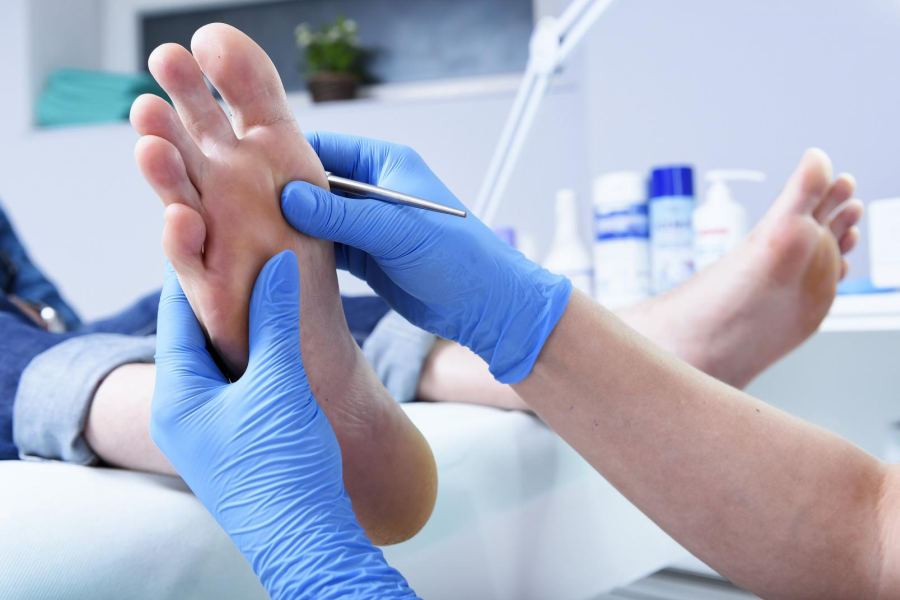
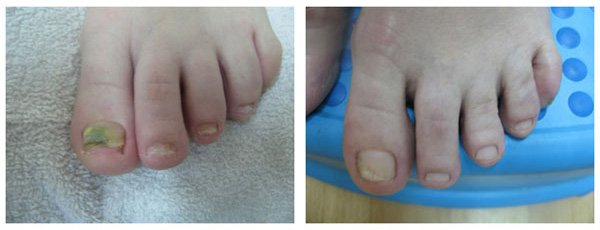

Katarína Brychtová.
Slovenská moderátorka a celebrita. Čo ju však nechránilo pred chorobou a nezodpovednosťou lekárov.
Nikto nie je imunitný voči lekárskej svojvôle. Ako lekári posielajú ľudí do posmrtného života za peniaze?
Reportér: „Katarína, prečo ste nám nikdy nehovorili o svojej vážnej chorobe? Minulý rok ste zmizli z tlače a skutočne ste žili izolovane a nikoho nekomunikovali.
Katarína Brychtová: Bola som v takom strašnom stave, že úprimne povedané, nemyslela som na nič. Myslela som si, že je to môj vlastný problém, a nemala by som obťažovať ostatných svojimi problémami. V skutočnosti sa o tejto otázke musí hovoriť verejne.
Korešpondent: „Ale prečo ste teraz sa rozhodli hovoriť o svojom probléme?“
Katarína Brychtová: Mám nie len túžbu hovoriť o tejto chorobe, ale len to, že chcem pomôcť ľuďom, ktorí rovnako ako ja bojujú s plesňou na nechtoch a nevedia nič o nebezpečenstvách tejto hroznej choroby. Všetci sme nemáme imunitu proti komplikáciám ochorenia, ktoré je zvyčajne náhle. Dnes ste očividne zdravým človekom a zajtra ste napoly mŕtvi, bez možnosti takmer úplného života. Väčšina lekárov z vás zároveň vyťahuje peniaze zbytočnými procedúrami a predpisuje falošné prípravky.
Korešpondent: „Čo tým myslíte?“
Katarína Brychtová: Presne to, čo hovorím. Keď sa objavili prvé príznaky plesne na nechtoch, ani som nevedela, čo sa deje. Faktom je, že mnoho žien si ani neuvedomuje, že ide o plnohodnotnú chorobu, takže podceňujú jej závažné následky. Bolo to tiež so mnou, jeden z mojich nechtov zožltol, začal sa rúcať - neexistovali žiadne ďalšie problémy, všetko bolo v poriadku, myslela som si tak.
Ak sa však s liečbou nezačnete včas, pleseň zničí telo zvnútra. Ľudský život sa dramaticky mení – mykóza vyvoľuje komplexy a je stálou príčinou stresu. Na pracovisku a doma je to sprevádzané zápachom, neprijateľným svrbením, deformáciou nechtu, množením a zhrubnutím nechtu.
Toto je, samozrejme, tragédia, keď si náhle uvedomíte, že ste chorá a prestala ste byť atraktívnou ženou. Nemôžete nosiť svoje obľúbené otvorené topánky. Okrem toho sú všetky vaše topánky tak páchnuce, že sa budete hanbiť za seba v práci, doma aj mimo domova...
Počúvajte, nikdy som si nemyslela, že jedného dňa budem mať taký problém. Vždy som viedla zdravý životný štýl a riadila som sa pravidlami osobnej hygieny. Mám osobného stylistu, kaderníka a manikéra. Nechápem, ako sa to stalo ... Ale v určitom okamihu nechty zožltli a začali sa hroutiť. Myslela som, že to bol nedostatok vitamínov, a vitamíny som pila stále, ale nepomohlo mi to. Koža okolo postihnutých nechtov začala svrbieť, sčervenala a potom sa objavil aj hrozný zápach...
Dva týždne po nástupe príznakov mykózy som však išla k lekárovi, ktorý ma diagnostikoval pleseň na koži a na nechtoch, vedecký názov je mykóza. Dostala som recept od lekára, kde mi predpísal veľa tabletiek a mastí. Myslela som si, že to bol koniec všetkého, pretože k uvoľneniu príznakov choroby došlo až po mesiaci liečby. Myslela som, že som zvladla mykózy a bol som z toho veľmi rada.
Ale po 2 mesiacov po liečbe sa opäť objavil nepríjemný zápach, silné svrbenie a stratifikácia nechtov. Znova som išla k svojmu lekárovi, chvála bohu on vzal problém vážne. Absolvovala som veľa laboratórnych testov, lekár mi predpísal veľa drahých procedúr a predpísal silné antimykotiká. Dlhú dobu som pila pilulky. Celý ten čas som cítila hroznú slabosť, nevoľnosť a zvracanie. Pravá strana bola veľmi chorá a ťahaná. Nakoniec som dostala do nemocnice, kde sa ukázalo, že to boli všetky vedľajšie účinky takzvanej „liečby“.
Korešpondent: „Čo Vám povedali v nemocnici?“
Katarína Brychtová: Lekári spanikárili. Ukázalo sa, že mnoho pacientov malo ochorenie pečene po liečbe, pretože tieto lieky sú veľmi toxické. Zistilo sa, že asi po dvoch mesiacoch bola u 50% pacientov diagnostikovaná toxická hepatitída. Lekári mi poradili odložiť liečenie nechtov a začať neodkladnú liečbu pečene. Šesť mesiacov som bola na rôznych klinikách, utratila som veľa peňazí. Sotva som prežila tuto nočnú moru... Hnevala som sa na lekárov kvôli ich nekompetentnosti, kvôli ich nedbanlivosti, pretože som mohla zomrieť. Liečenie bolo zdĺhavé a nákladné.
Reportér: „Teraz ste v poriadku, nechty sú zdravé a lesklé. Ako si vyliečili mykózu? “
Katarína Brychtová: Stretla som starého priateľa, ktorý teraz pracuje v Medzinárodnej asociácii mykológov. Povedala som mu, čo sa mi stalo. On má veľa priateľov, rozhodol sa mi pomôcť. Potom telefonoval niekoľko dní a v ten istý deň ma vzal k dermatológovi, ktorý pravidelne pozývaný na predné výskumné ústavy a kliniky v Európe a USA.
Dermatológ mi vysvetlil, že plesne môžeme chirurgicky zbaviť, to znamená odstrániť postihnuté nechty, ale neexistujú žiadne záruky. Nové nechty rastú s plesňou, čo spôsobuje ten istý problém. Preto sa chirurgické odstránenie postihnutej plesne na nechtoch na klinike už nevykonáva.
Na tejto klinike sa vyvinuli nové prípravky na ošetrenie plesní nechtov, nad ktorými pracovali slovenskí vedci.
Už som nemala čo stratiť, bola som už v beznádejnej situácii. Rozhodla som sa opäť lekárovi dôverovať. A rozhodla som sa vyskúšať tento prípravok. A neľutovala som to.
Svrbenie a zápach zmizli už v prvom týždni užívania gélu. Doslova po 2-3 týždňoch som si všimla, že nechty rastúce na koreňoch boli hladké a zdravé. A po troch mesiacoch aplikácie na nohách rástli zdravé a lesklé nechty. Moje šťastie nepoznalo žiadne hranice.
Korešpondent: „Čo je to za prípravok, ktorý Vám pomohol, povedzte nám všetkým viac o tom, prosím?“
Katarína Brychtová: Samozrejme. Unikátny vývoj slovenských vedcov sa nazýva Myceril Gél. Navrhnuté špeciálne na ošetrenie nechtov proti mykóze. Účinné aj v najpokrokovejších prípadoch.
Tento gél v súčasnosti hrá vedúcu úlohu pri liečení plesňových ochorení, pretože on ničí novú generáciu plesni. Tajomstvo jeho účinnosti spočíva v kombinovanom a účinnom pôsobení na ľudské telo.
Gél nie je pre organizmus toxický, neovplyvňuje pečeň. Je ideálny pre domácu liečbu. Okrem hlavného účinku má gél Myceril niekoľko ďalších výhod:
- Dezinfikuje a ničí štruktúru plesňovej infekcie
- Odstraňuje svrbenie, olupovanie a podráždenie kože - po prvej aplikácii
- Rýchlo obnovuje štruktúru nechtov, lieči rany a praskliny na nohách
- Neutralizuje nepríjemné pachy a normalizuje aktivitu potných žliaz
- Zabraňuje rastu plesne
- Úplne eliminuje všetky príznaky mykózy
Korešpondent: „Prečo je Myceril Gél účinnejší ako iné známe antimykotiká predávané v lekárňach?“
Katarína Brychtová: Ukázalo sa, že fungálne bunky sa prispôsobujú liekom. Pretože väčšina fungicídov bola vyvinutá pred 20 až 30 rokmi, pleseň už vyvinula imunitu a tieto lieky sa stali neúčinnými.
Myceril Gél je úplne nový produkt, ktorý vďaka svojmu jedinečnému zloženiu úplne ničí plesňovú infekciu na vonkajšom povrchu nechtu a čistí telo zvnútra. Navyše pomocou gélu sa môžete správať nezávisle, bez pomoci lekárov. Postupujte podľa pokynov ako ja.
Korešpondent: Je možné kúpiť tento produkt pre bežných ľudí? Pretože nie každý má priateľov ako Vy.
Katarína Brychtová: V súčasnosti je gél Myceril distribuovaný v rámci špeciálneho programu s finančnými prostriedkami od Medzinárodnej asociácie mykológov. Problém je v tom, že lekári najčastejšie uprednostňujú predpisovanie drahých liekov alebo procedúr, z čoho profitujú sami. Lekári nemajú záujem o odporúčanie tohto účinného produktu pacientom.
Medzinárodná asociácia mykológov nedávno našla východisko z tejto situácie: bol vytvorený špeciálny objednávkový formulár, prostredníctvom ktorého môžu všetci obyvatelia našej krajiny objednať tento gél. Teraz je byrokratická fáza úplne vylúčená z procesu. Musíte len zadať svoje meno a telefónne číslo, aby vás kontaktoval konzultant liečebného programu, poskytol radu a objasnil, kedy bude vhodné poslať produkt.
Ako vidíte, všetko je mimoriadne jednoduché a transparentné. Každý, kto má počítač alebo telefón s prístupom na internet, môže objednať a získať gél Myceril.
Korešpondent: Ukončili sme náš zaujímavý rozhovor. Katarína, chcete povedať ešte niečo?
Katarína Brychtová: Jediné, čo chcem povedať: nezabudnite, že pleseň na nohách a nechtoch nie je len kozmetickým defektom, ale aj veľmi vážnym ochorením. Dôsledky môžu byť najzávažnejšie, preto by ste sa s tým mali starostlivo poradiť skôr, ako bude neskoro.
Ak chcete zabudnúť na túto hroznú vôňu, neznesiteľné svrbenie a nepríjemné hnilobné nechty - objednajte si gél Myceril. Teraz je k dispozícii každému.
Vzhľadom na nedostatok gélu je program Medzinárodnej asociácie mykológov platný do 27 júla 2021 , po ktorom bude pozastavený na dobu neurčitú. Dovtedy môžu všetci občania Slovenska dostať gél Myceril tým , že si ho objedná pomoci špeciálneho objednávkového formulára.
POZOR! Dajte si pozor na falošné prípravky!


